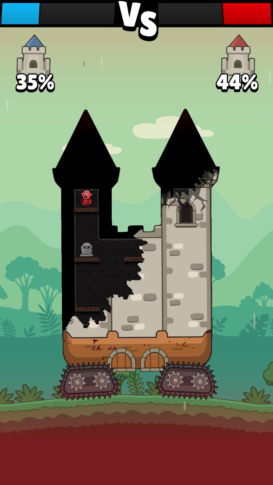
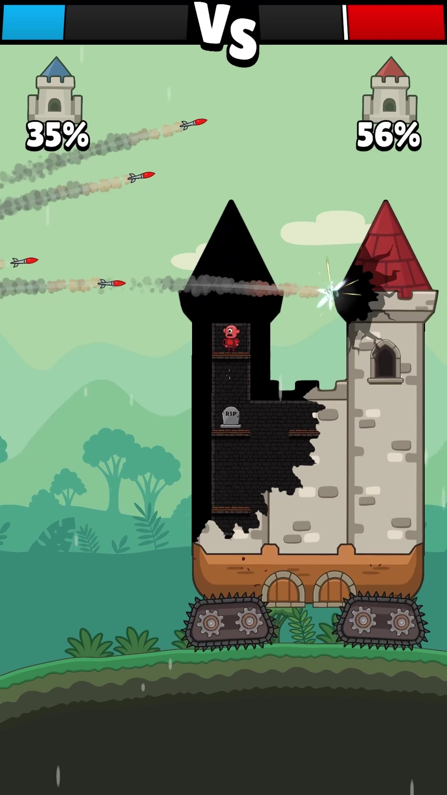

ref — palette POW (étoile rouge cœur)

ref — chaos post-impact

ref — frame 18s (damage in-game)

cycle de vie — un dégât "-140" rouge POW (0% → 100%)
t=0% (spawn, overshoot)
t=20% (settle)
t=50% (mid-rise)
t=80% (fade in)
t=100% (gone)
variantes de tier — taille / couleur / "!" critique
-44 blanc (normal)
-140 rouge POW (≥100)
-280! rouge crit gros
-12 blanc petit
scène composite — 6 dégâts simultanés sur mur pierre (chaos d'impact)